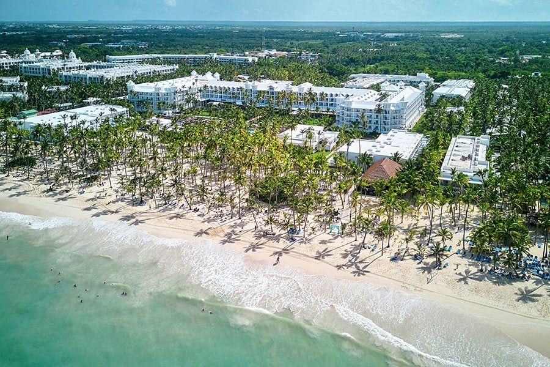

REPÚBLICA DOMINICANA · PREFERENCIA RIU
Las alternativas,
lado a lado.
Cinco propuestas, tres hoteles RIU. Compará costos, playa, comida y viaje; guardá favoritos y consultá los descartes y las fuentes.
Abrir el comparador RIU